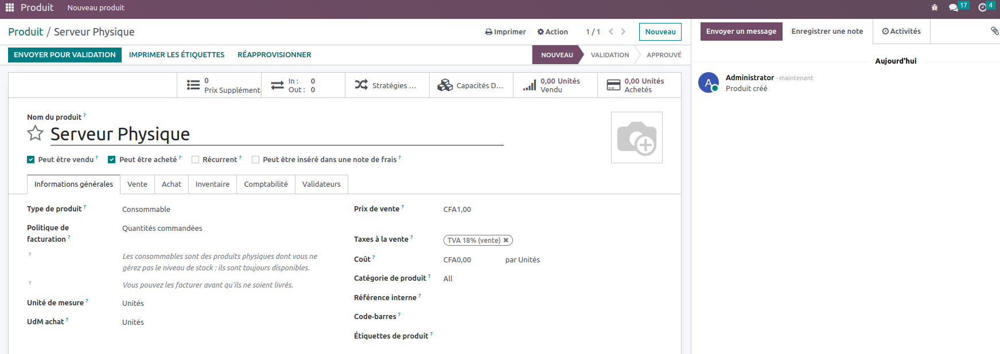
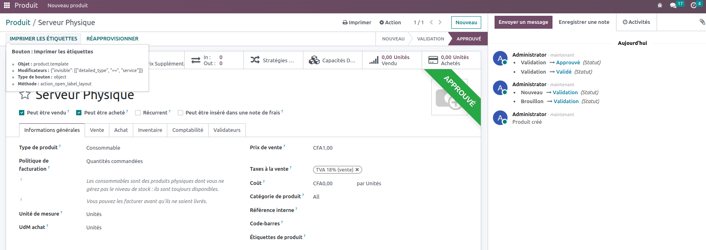
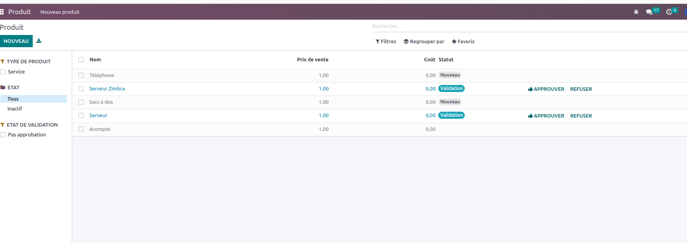

Main Features
-
Users can submit product creation requests
Users have the capability to submit requests for the creation of new products. This feature allows employees or authorized individuals to initiate the process of adding new products to the company's inventory or catalog. By providing essential details and specifications through a structured request form, users can efficiently communicate their product ideas or requirements to the relevant departments or teams responsible for product management. This streamlined process enhances collaboration and ensures that new product suggestions are captured and evaluated for potential implementation within the organization.
-
Admins can review and approve product creation requests.
In our system, administrators have the capability to thoroughly assess and grant approval for product creation requests. This functionality empowers administrators to meticulously examine the details of each product creation proposal, ensuring its compliance with established standards and criteria. Once reviewed and deemed suitable, administrators can readily approve these requests, facilitating a streamlined and controlled process for introducing new products into our system. This feature enhances transparency and accountability, as it enables administrators to make informed decisions while maintaining the integrity of our product catalog.
-
Avoid Duplicate Products
This feature is crucial for maintaining data accuracy and ensuring efficient inventory and catalog management. By implementing this functionality, the system can intelligently detect and alert users when they attempt to add a product that already exists, thereby minimizing data redundancy and the risk of inconsistencies. This not only streamlines data entry processes but also enhances overall data quality, helping organizations maintain a clean and organized product catalog, which is essential for effective decision-making and operations.